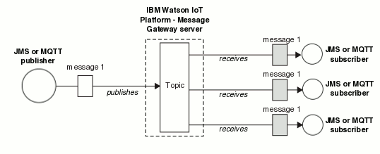

Publish/Subscribe
Publish/subscribe is the mechanism by which subscribers can receive information, in the form of messages, from publishers.
A typical publish/subscribe system has more than one publisher and more than one subscriber. An application can be both a publisher and a subscriber.
The provider of information is called a publisher. Publishers supply information about a subject, without needing to know anything about the applications that are interested in that information. Publishers generate this information in the form of messages, called publications, that they want to publish and define the topic of these messages.
The consumer of the information is called a subscriber. Subscribers create subscriptions that describe the topic that the subscriber is interested in. Thus, the subscription determines which publications are forwarded to the subscriber. Subscribers can make multiple subscriptions and can receive information from many different publishers.
Published information is sent in a JMS or MQTT message, and the subject of the information is identified by its topic. The publisher specifies the topic when it publishes the information, and the subscriber specifies the topics from which it wants to receive publications. The subscriber is sent information from only those topics it subscribes to.
The following diagram illustrates the publish/subscribe model. In the diagram, a publisher publishes a message to a topic. A copy of that message is received by all three of the subscribers to that topic.

- The publisher is not required to know who the subscriber is. This means that the publisher is not required to include the added complexity of destination information.
- The subscriber is de-coupled from the publisher. This de-coupling is useful as the subscriber receives messages only when they are interested in a particular topic. The subscriber can subscribe or unsubscribe from a topic at any point without affecting the publisher.
- The messaging topology is dynamic and flexible. Publishers and subscribers can use the topic structure to quickly broadcast and receive messages.
- Publish/subscribe supports easy deployment and integration.
You can also use shared subscriptions. Shared subscriptions can be used to share the work of receiving messages from a topic subscription between subscribers. Each message is received by only one subscriber on that shared subscription. For more information about shared subscriptions, see Subscribers and Subscriptions.